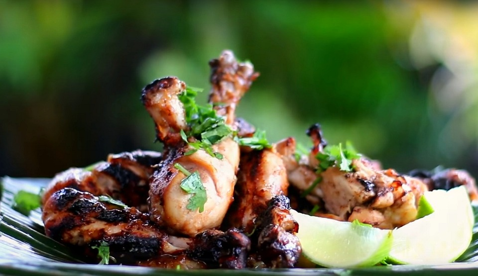

Ingredienser
- 8 Kycklingklubbor
- 1 msk olja
- Salt och svartpeppar eller rub
- Valfri glaze
Gör såhär:
- Gnid in kycklingklubborna med oljan.
- Krydda med salt och peppar eller gnid in dem med rub.
- Grilla dem på indirekt grill tills innertemperaturen är 82°C, 35-40 minuter. Vänd dem då och då.